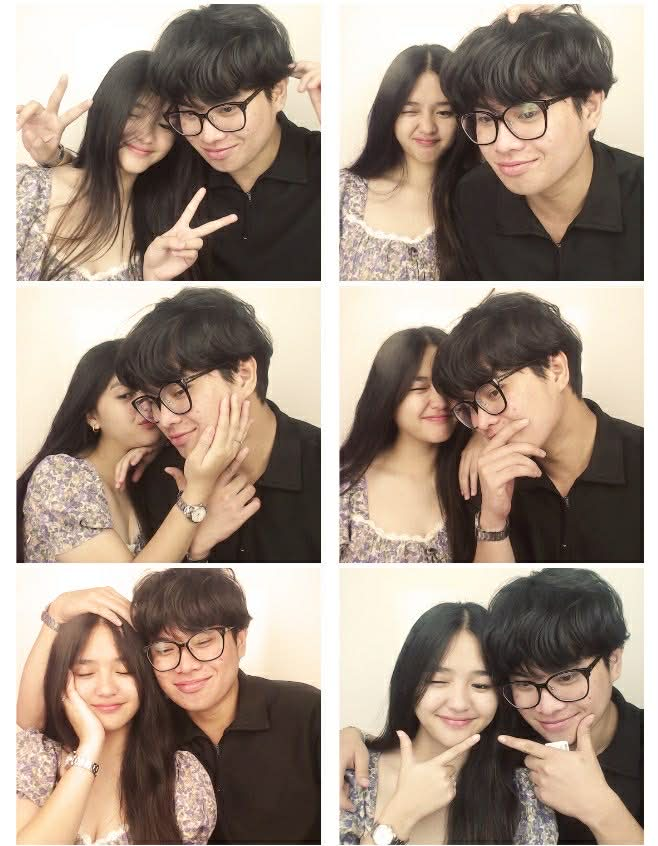
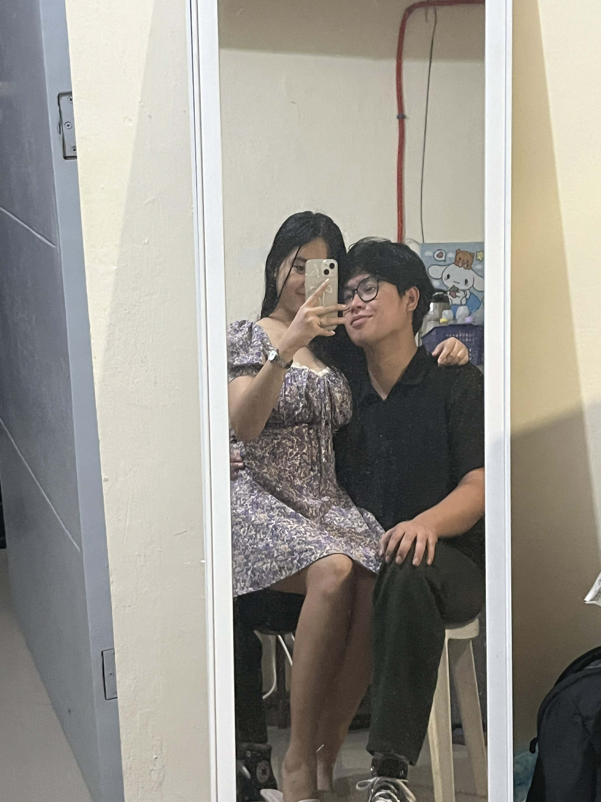
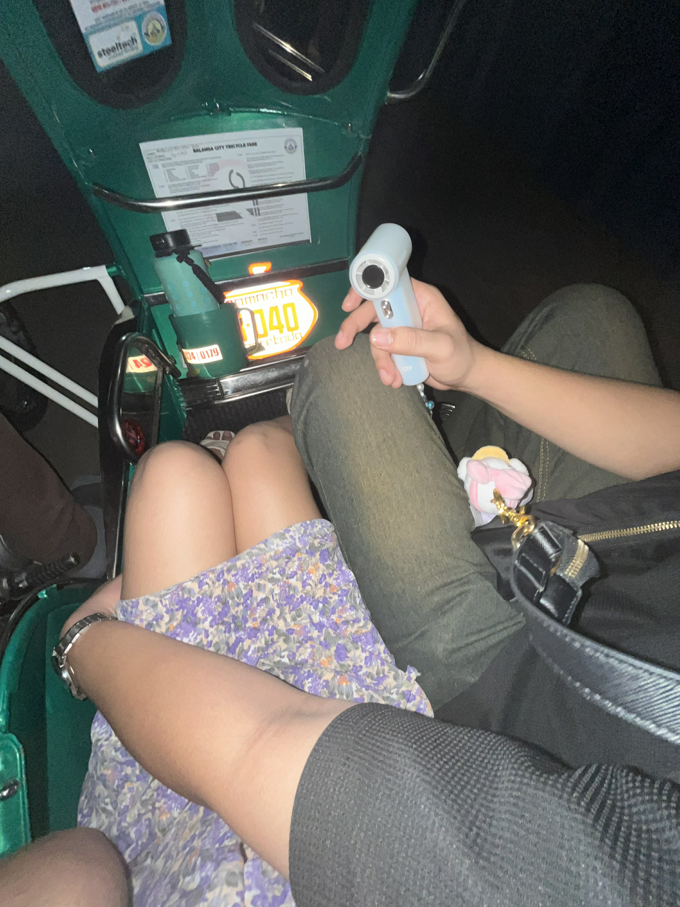

This site is for my
pretty girlfriend
Chicklet Bruan Almonte
Some memories deserve a quiet place to be remembered. I made this little page for you.



Take your time. There’s no rush.
Are you Chicklet?
This page was made especially for you.
When is Kenji’s birthday?
A little memory check · MM/DD/YY
Would you like to open
Kenji’s letter?
You can say no. I’ll respect that.
For Chicklet
Dear Chicklet,
I made this because our story matters to me, and I wanted to remember it with tenderness. Whatever happens next, kung ano man yung maging desisyon mo after reading this, I promise na this will be the last time na makakabasa ka or makakakita ka ng kahit anong bagay na manggagaling sa akin. Hindi na kita kukulitin after nito, and I'll respect whatever you decide. Pero bago ako tuluyang manahimik, sana bigyan mo ako ng pagkakataong sabihin lahat ng matagal ko nang kinikimkim. Alam mo, miss na miss na miss na kita. Hindi ko alam kung paano ko sisimulan 'to kasi ang dami kong gustong sabihin, pero parang walang sapat na salita para maipaliwanag kung gaano kita nami-miss. Ang hirap pala kapag yung taong nakasanayan mong kausap araw-araw, yung taong gusto mong kwentuhan tungkol sa maliliit na bagay, at yung taong gusto mong takbuhan kapag pagod ka na sa mundo, bigla na lang nagiging taong kailangan mong tiisin na hindi kausapin. Pasensya na kung sa ganitong oras at sa ganitong paraan ko pa piniling sabihin sa'yo lahat ng 'to. Hindi ko lang talaga alam kung paano kita kakausapin ulit. Gusto kitang kausapin nang maayos, pero natatakot din ako kasi baka kahit anong sabihin ko, wala na talagang magbago. Alam kong hindi sapat ang mga salita para ayusin lahat ng nasira sa atin. Alam kong hindi rin sapat yung pagmamahal lang kung may mga bagay na paulit-ulit nang nakakasakit sa isa't isa. Pero sa totoo lang, hanggang ngayon, umaasa pa rin ako. Umaasa akong baka may maliit pang parte sa puso mo na gustong subukan ulit. Umaasa akong baka sa kabila ng lahat ng nangyari, may chance pa tayong ayusin yung mga bagay na hindi natin naayos noon. Kasi ako, kahit ang dami nang nangyari, hindi ko kayang ituring na basta na lang nawala yung lahat ng pinagsamahan natin. Hindi ko kayang kalimutan na minsan, naging masaya tayo, naging tahanan tayo ng isa't isa, at naging parte tayo ng mga araw na ayaw nating matapos. Sana bigyan mo pa ako ng isang pagkakataon. Kung kailangan kong lumuhod para lang maipakita sa'yo kung gaano ako kaseryoso sa kagustuhan kong ayusin tayo, gagawin ko. Hindi dahil gusto kitang maawa sa akin, kundi dahil handa akong aminin yung mga pagkukulang ko at harapin yung mga bagay na kailangan kong baguhin sa sarili ko. Ayokong puro pangako lang. Gusto kong matutunan kung paano ka mahalin nang mas tama, kung paano ka pakinggan nang hindi ko inuuna yung sarili kong nararamdaman, at kung paano maging taong nagbibigay sa'yo ng peace instead na dahilan para masaktan ka. Sobrang chine-cherish ko yung relationship natin. Hindi man naging perfect, hindi man natin naiwasan yung mga misunderstanding, tampuhan, at sakit na naidulot natin sa isa't isa, hindi ibig sabihin na walang halaga yung lahat ng 'yon sa akin. You were never just someone I talked to. You became a part of my everyday life, my routines, my plans, and even the little things that used to make an ordinary day feel special. Kaya siguro hanggang ngayon, nahihirapan pa rin akong tanggapin na baka wala na talaga tayo. Hindi ko rin itatanggi na naapektuhan na rin ako sa trabaho ko kakaisip sa atin. Minsan, kahit anong pilit kong mag-focus, bigla ka na lang papasok sa isip ko. Mapapaisip ako kung ano na kaya ginagawa mo, kumusta na kaya araw mo, kung may mga bagay bang gusto mong ikwento pero wala ka nang mapagsabihan, o kung may mga pagkakataon bang may gusto kang sabihin sa akin pero pinipili mo na lang na sarilinin. Minsan, napapaisip din ako kung naiisip mo pa ba ako. Kung may mga kanta ka pa bang naririnig na nagpapaalala sa atin. Kung may mga bagay ka pa bang nakikita na gusto mong ikwento sa akin, bago mo maalalang hindi na pala tayo nag-uusap. Kung may mga pagkakataon bang hinahanap din ng mga mata mo yung presence ko, kahit saglit lang. I know these questions might never have answers, pero hindi ko maiwasang itanong sa sarili ko kasi ang hirap palang mawalan ng taong naging malaking parte ng buhay mo habang ikaw, dala-dala mo pa rin yung mga alaala na akala mo, madadagdagan pa sana. Lagi ko pa ring naaalala yung sinabi mo sa akin, na mas nasasaktan na kita kaysa sa mga kaibigan mo. At hanggang ngayon, masakit pa rin sa akin isipin na naging dahilan ako ng ganitong klaseng sakit sa taong mahal na mahal ko. Naalala ko yung kwento mo sa akin tungkol sa mga kaibigan mong iniwan ka at mas piniling sumama sa iba. Naalala ko rin kung gaano ka nasaktan noon. At alam mo, siguro isa rin 'yon sa mga dahilan kung bakit gusto kong ipaglaban tayo. Kasi ayokong maramdaman mong iniwan na naman kita. Pero habang iniisip ko 'yon, naiintindihan ko rin na baka hindi pareho yung sitwasyon natin. Baka kahit hindi kita iniwan sa paraang iniwan ka nila, nasaktan pa rin kita sa mga paraang hindi ko agad nakita o naintindihan. And I'm sorry. I'm genuinely sorry for the pain I've caused you. Hindi ko sasabihing wala akong ginawang mali. Hindi ko rin sasabihing dahil mahal kita, dapat bigyan mo ako ng chance. You don't owe me another chance just because I love you. Pero sana malaman mo na yung pagmamahal ko sa'yo ay hindi lang tungkol sa kung gaano kita gustong makasama. Tungkol din ito sa kagustuhan kong maintindihan yung sakit na naramdaman mo, tanggapin yung mga pagkukulang ko, at matutong maging mas mabuting tao, kahit gaano kahirap. Pero aaminin ko, may mga gabi pa rin na hindi ako mapakali kakaisip sa atin. May mga gabing gusto kitang i-message, gusto kong itanong kung okay ka lang, gusto kong sabihin na miss na miss na kita, pero pinipigilan ko yung sarili ko kasi ayokong maramdaman mong hindi ko nirerespeto yung space na kailangan mo. And sometimes, I wonder if you ever feel the same way. Nasaktan ka rin ba nung hindi na tayo nag-uusap? May mga gabi rin ba na nahihirapan kang matulog dahil sa mga alaalang hindi mo maalis sa isip mo? May mga pagkakataon bang hinahanap mo rin yung presence ko, yung boses ko, yung mga simpleng pangungulit ko, o yung taong dati mong nakakausap tungkol sa kahit anong bagay? May mga moments din ba na nami-miss mo tayo? Hindi ko tinatanong 'to para obligahin kang sabihin na nami-miss mo rin ako. Hindi ko rin gustong makonsensya ka dahil nahihirapan akong wala ka. Gusto ko lang malaman kung may parte rin ba ng relationship natin na patuloy mong pinapahalagahan, kahit pareho na tayong nasaktan. Kasi ako, hanggang ngayon, hindi ko kayang sabihin na wala na lang lahat sa akin. Hindi ko kayang ituring na ordinaryong chapter ka lang sa buhay ko na puwede kong isara nang walang nararamdaman. You meant so much to me, and a part of me will always be grateful that, at one point in my life, I got to love you and be loved by you. Kung may pagkakataon pa, gusto kitang makausap ulit. Hindi para makipagtalo, hindi para sisihin ka, at hindi para pilitin kang bumalik. Gusto ko lang sanang magkaroon tayo ng isang mahinahon at totoong pag-uusap, yung pareho nating kayang sabihin yung nararamdaman natin nang hindi natin kailangang magtalo o magtanggol ng sarili natin. Gusto kong marinig yung side mo. Gusto kong maintindihan kung saan ako nagkulang, kung ano yung mga bagay na hindi ko nakita, at kung ano yung mga sakit na hindi ko namalayang nadagdag ko sa buhay mo. At kung may pagkakataon pa talaga, gusto kong malaman kung may willingness ka pa bang subukan ulit, kahit dahan-dahan lang, kahit hindi agad bumalik sa dati, basta pareho nating gustong ayusin. Pero kung wala na talaga, kung buo na yung desisyon mo, masakit man para sa akin, tatanggapin ko. Hindi ko man kayang maging okay agad, hindi ko man kayang burahin yung pangungulila ko overnight, hindi ibig sabihin na hindi ko kayang respetuhin yung desisyon mo. Mahal kita, pero ayokong maging dahilan kung bakit pakiramdam mo wala kang choice. Ayokong yung pagmamahal ko ang maging bigat na kailangan mong dalhin. After this message, hindi na ako mangungulit. Hindi na ako gagawa ng paraan para pilitin kang kausapin ako. Hindi na ako maghihintay ng sagot sa paraang magiging pressure sa'yo. Kung gusto mong sumagot, pakikinggan kita. Kung ayaw mo na, rerespetuhin ko rin 'yon. At kung katahimikan yung sagot mo, kahit masakit, susubukan kong tanggapin. Pero bago ako tuluyang manahimik, gusto kong malaman mo ang isang bagay. **Hindi ako nagsisisi na ikaw yung minahal ko.** Kahit masakit ngayon, kahit may mga bagay tayong hindi na maibabalik, kahit hindi ko alam kung saan tayo dadalhin ng mga susunod na araw, hindi ko pagsisisihan na minsan, naging parte ka ng buhay ko. You gave me memories that I will always carry, lessons that I will never forget, and a kind of happiness that I will always be thankful for. Sana, sa kabila ng lahat, kapag naalala mo ako balang araw, hindi lang yung sakit yung maalala mo. Sana maalala mo rin yung mga panahong pinasaya natin ang isa't isa. Yung mga simpleng usapan, yung mga tawanan, yung mga pangarap na minsan nating binuo, at yung dalawang taong kahit hindi naging perpekto, minsan namang sinubukang mahalin ang isa't isa sa abot ng kanilang makakaya. And if this really is the end of our story, I hope life treats you gently. Sana mahanap mo yung peace na deserve mo. Sana maging masaya ka, kahit sa mga araw na hindi na ako yung dahilan ng ngiti mo. Sana matupad mo yung mga pangarap na minsan mong kinuwento sa akin. At sana, sa mga panahong mabigat ang mundo, may mga taong handang makinig sa'yo, umunawa sa'yo, at mahalin ka sa paraang kailangan mo. Hindi ko alam kung may lugar pa ako sa future mo. Hindi ko alam kung darating yung araw na magiging okay na tayo, whether together or separately. Pero ang alam ko, sa ngayon, mahal pa rin kita, miss na miss kita, at may parte sa akin na umaasang sana hindi pa ito yung huling pahina ng story natin. Pero hindi na kita pipilitin na ipagpatuloy ang kwentong baka gusto mo nang tapusin. This time, I'll let you choose. Kung may natitira pang chance para sa atin, sana piliin nating pag-usapan at ayusin, hindi dahil natatakot tayong mawala ang isa't isa, kundi dahil pareho pa rin nating gustong manatili at matutong magmahal nang mas maayos. And if your heart has already chosen a different path, I'll try my best to let you walk it in peace. Salamat sa lahat. Salamat sa panahong naging parte ako ng buhay mo. Salamat sa mga alaala, sa pagmamahal, at sa mga pagkakataong kahit saglit, naramdaman kong may taong katulad mo akong nakasama sa buhay. I'm sorry for the times I hurt you when all I ever wanted was to love you. I'm sorry for the things I failed to understand while we were still trying to figure each other out. And I'm sorry if this message brings back feelings that you're trying so hard to move past. I just needed you to know that behind all my mistakes, my overthinking, and my desperate hope to fix us, there was someone who genuinely loved you and who is still learning how to accept that love isn't always enough to make two people stay. I love you. I miss you. And a part of me will always wish that things had turned out differently for us. Pero ito na yung huling beses na sasabihin ko sa'yo lahat ng 'to. Hindi dahil bigla na lang nawala yung pagmamahal ko, kundi dahil ayokong dumating sa puntong yung pagmamahal na nararamdaman ko para sa'yo ay maging dahilan para hindi ko na respetuhin yung gusto mo. Whatever happens after this, I'll carry our story with tenderness. Hindi ko alam kung saan tayo dadalhin ng buhay, pero hindi ko na ipipilit ang sarili ko sa lugar na hindi na para sa akin. And if this is goodbye, then goodbye, my lovicakes hehe. I hope you find the happiness and peace that your heart has been looking for. At kung sakaling maalala mo ako sa mga susunod na araw, sana kahit papaano, maalala mo na may isang taong naging masaya dahil nakilala ka niya, at kahit hindi niya nakuha yung ending na pinangarap niya kasama ka, he will always be grateful that, once upon a time, your story became a part of his. Take care of yourself, always. You will always be someone I once prayed would stay. And even if you don't, I'll learn to be thankful that, for a while, you did.
You don’t owe me a particular answer. I only hope we can treat each other kindly, whatever we decide.
With love,
Kenji
Thanks for being honest.
Would you like to share why? You can skip this, too.
Some moments stay
soft around the edges.
Tap each card to reveal a memory.
A little something
for you.
assets/our-video.mp4
Hello HAHAHAHA, sorry kung parang pang MMK or magpakailanman yung video HAHAHA
Are you sure you want
to end our relationship?
Please choose what feels right to you. There’s no wrong answer here.
I have something
for you.
If you’d like to, visit Kuya Raffa’s flower base. There’s a letter tucked underneath.
The flower base is where to look.
Add your own hint photo inassets/flower-hint.jpgLet’s have
a real conversation.
If you feel comfortable, I’d like to see you and listen.
Balanga, Bataan
Only if you want to. We can talk calmly, and I’ll respect whatever you decide.
Thank you for reading.
Your answer has been saved on this device.
Share your answer via email